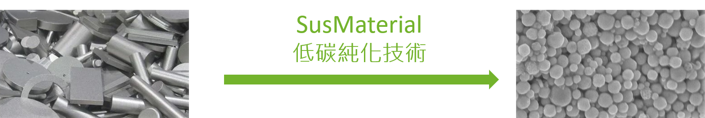

高效率的低碳金屬精煉工序
傳統的金屬回收製程需要繁瑣步驟，不僅耗時、耗能，更產生大量化學廢棄物。
永環材料具備成熟穩健的金屬處理工藝，能突破傳統製程限制，提供高品質且穩定的原物料。
創新製程：從廢料到高純度綠色材料
1. 廢料進廠
安全合規的回收網絡，確保廢棄靶材與工業廢料妥善分類入庫。
➔
2. 低碳精煉
採用低溫、低化學品用量之獨特單向化程序，大幅降低過程碳排放。
➔
3. 穩定出貨
產出 99.9% 甚至更高純度之鎢粉/鎢酸酐，重新投入高端製造供應鏈。
為何選擇永環的技術？
頂級純度與穩定供應
我們利用成熟的高效綠色製程，能穩定供應 99.9% 甚至更高純度的高純度鎢粉/三氧化鎢，幫助客戶避開國際礦產市場的劇烈價格波動。
高度商業化與產能彈性
我們的生產設備具備模組化特性，易於依據客戶訂單需求快速擴充產線，確保大宗原物料合約的如期交付。
卓越的減碳能力
相較於傳統的再生製程，我們的產品大幅降低能源使用與耗材，構建永續、低碳、循環的綠色經濟。
高品質再生產品
